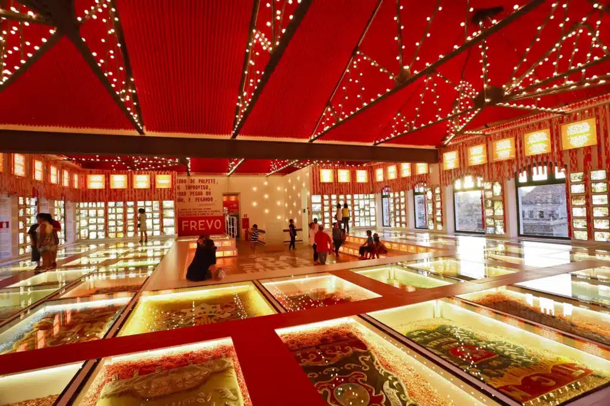

Rua do Bom Jesus
A Rua do Bom Jesus é uma das ruas mais famosas e históricas do Recife Antigo. Ela já foi considerada uma das ruas mais bonitas do mundo.

Paço do Frevo
O Paço do Frevo é um centro cultural dedicado ao frevo, ritmo musical e dança tradicionais de Pernambuco.
